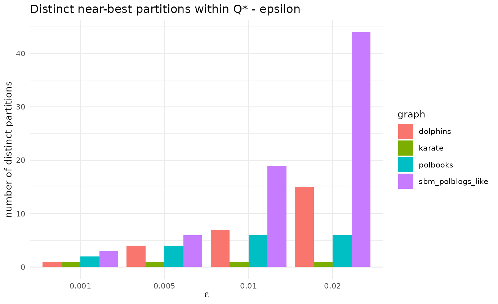

Every model is a simplification
Modularity is an approximation, and one of its known pathologies is degeneracy — many structurally distinct partitions can have within of the maximum [Good, de Montjoye & Clauset, 2010]. For a multi-start metaheuristic this is double-edged: lots of optima to find, but the single partition you report (and therefore the leaders you name) is somewhat arbitrary. We audit how many distinct near-best partitions LCDA-GRASP finds and their mean pairwise NMI (low NMI = high degeneracy).
knitr::kable(
dplyr::transmute(d$results, graph, epsilon,
Q_star = round(Q_star, 4),
runs_in_band = n_runs_in_band,
distinct_partitions = n_distinct_partitions,
mean_NMI = round(mean_pairwise_NMI, 3)),
caption = "Distinct near-best partitions and their similarity, per network and tolerance.")| graph | epsilon | Q_star | runs_in_band | distinct_partitions | mean_NMI |
|---|---|---|---|---|---|
| karate | 0.001 | 0.4020 | 33 | 1 | 1.000 |
| karate | 0.005 | 0.4020 | 33 | 1 | 1.000 |
| karate | 0.010 | 0.4020 | 33 | 1 | 1.000 |
| karate | 0.020 | 0.4020 | 33 | 1 | 1.000 |
| dolphins | 0.001 | 0.5259 | 4 | 1 | 1.000 |
| dolphins | 0.005 | 0.5259 | 12 | 4 | 0.845 |
| dolphins | 0.010 | 0.5259 | 28 | 7 | 0.821 |
| dolphins | 0.020 | 0.5259 | 59 | 15 | 0.798 |
| polbooks | 0.001 | 0.5272 | 44 | 2 | 0.980 |
| polbooks | 0.005 | 0.5272 | 48 | 4 | 0.967 |
| polbooks | 0.010 | 0.5272 | 60 | 6 | 0.931 |
| polbooks | 0.020 | 0.5272 | 60 | 6 | 0.931 |
| sbm_polblogs_like | 0.001 | 0.2093 | 3 | 3 | 0.339 |
| sbm_polblogs_like | 0.005 | 0.2093 | 6 | 6 | 0.349 |
| sbm_polblogs_like | 0.010 | 0.2093 | 19 | 19 | 0.347 |
| sbm_polblogs_like | 0.020 | 0.2093 | 44 | 44 | 0.341 |
library(ggplot2)
ggplot(d$results, aes(factor(epsilon), n_distinct_partitions, fill = graph)) +
geom_col(position = "dodge") +
labs(title = "Distinct near-best partitions within Q* - epsilon",
x = expression(epsilon), y = "number of distinct partitions") +
theme_minimal(base_size = 10)
Reading. Even at small , several distinct partitions coexist in the top band on the larger/diffuse networks, and the mean pairwise NMI sits below 1 — so the reported leader-community configuration is one of several near-equivalent ones. This does not invalidate the method, but it bounds the interpretability claim about “named leaders”: the names can shift across seeds. Beyond the well-known resolution limit, this near-optimum degeneracy (Good, de Montjoye & Clauset, 2010) is a genuine caveat for any modularity-maximising leader assignment and is worth reporting alongside it.
References
- Good, B. H., de Montjoye, Y.-A., & Clauset, A. (2010). Performance of modularity maximization in practical contexts. Phys. Rev. E, 81, 046106. doi:10.1103/PhysRevE.81.046106